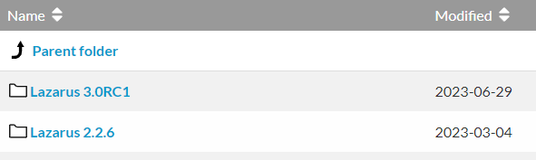
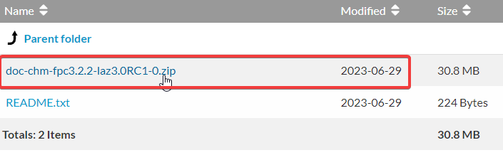
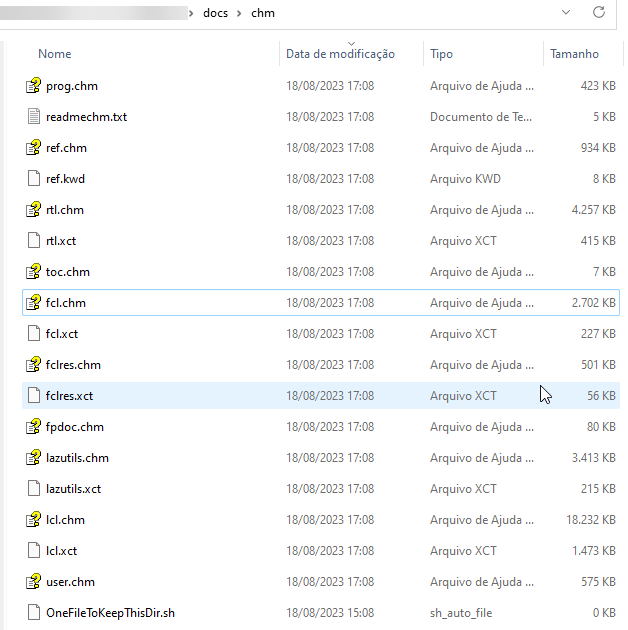

(Este subtópico pode estar incompleto, talvez você possa ajudar enviando instruções que estejam faltando aqui)
Quando usado o instalador oficial do Lazarus o editor de código é integrado a ajuda online, ou seja, se você der um F1 quando uma função ou método estiver em foco então uma janela abre-se com uma explicação sobre o mesmo. Infelizmente isso não funciona quando você faz a instalação via GIT, essa integração você precisa fazer manualmente. Vamos ao procedimento.
Vá até a pasta
$(LazarusDir)\components\chmhelp\lhelp
Lá você encontrará um arquivo intitulado lhelp (Linux, FreeBSD, macOS) ou lhelp.exe se for Windows. Se você não encontrá-lo é porque você não instalou o pacote ‘chmhelppkg.lpk’, o que é bem estranho, já que o mesmo vem pré-instalado logo depois da compilação pronta.
Agora vá para a pasta:
$(LazarusDir)\docs\chm
E lá você deve encontrar por uma série de arquivos com a extensão *.chm, no meu caso, eles não existem, então aponte seu navegador de internet para o seguinte endereço:
http://sourceforge.net/projects/lazarus/files/Lazarus Documentation/
É uma página assim:

todo: gravar imagem assets/img/help_sourceforge_page.png (ref: image.png do original)Entre no link correspondente a versão mais recente e faça o Download dum arquivo .zip que internamente tem os arquivos de ajuda(.chm):

todo: gravar imagem assets/img/help_download_zip.png (ref: image-2.png do original)Descompacte os arquivos na pasta:
$(LazarusDir)\docs\chm
Ficando assim:

todo: gravar imagem assets/img/help_chm_folder.png (ref: image-4.png do original)Atenção que a imagem acima pode não mostrar todos os arquivos .chm que foram extraídos, a imagem é meramente ilustrativa.
Neste ponto a IDE do Lazarus já é esperta o suficiente para quando você apertar F1 e chamar a ajuda online. Faça o teste usando o Object Inspector ou alguma função ou método em seu código.
Caso a ajuda online não funcione, vá em Tools|Options|Help, daí em CHM Help Viewer:
 todo: gravar imagem assets/img/lazarus_help_options.png (ref: image-5.png do original)
todo: gravar imagem assets/img/lazarus_help_options.png (ref: image-5.png do original)
Entenda os parâmetros:
HelpExe: Deve apontar para o utilitário lhelp. Se você deixar em branco, a IDE o procurará em: $(LazarusDir)\components\chmhelp\lhelp\lhelp.exe, mas você pode indicar outro local. Opcionalmente no Windows, você pode escolher o utilitário “hh.exe””
HelpEXEParams: Normalmente ficará vazio a mesmo que você precise chamar o utilitário com alguma opção de linha de comando. Se você optou por usar o utilitário “hh.exe” então neste caso o HelpEXEParams deve conter “%s::%s” (aspas duplas incluídas).
HelpFilesPath: Deve apontar para o diretório onde estão os arquivos *.chm. Se você deixar em branco, a IDE os procurará em $(LazarusDir)\docs\html e também em $(LazarusDir)\docs\chm. No entanto, você pode especificar outro local.
CONCLUSÃO
A documentação e a ajuda online é altamente requerida. Faz muito sentido você confirmar se a mesma está presente em seu sistema e se não o estiver então seguir os procedimentos delineados.